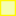
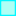
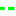
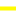

<!doctype html>
<html lang="en">
    <head>
        <meta charset="utf-8">
        <meta http-equiv="X-UA-Compatible" content="IE=edge">
        <meta name="viewport" content="initial-scale=1,user-scalable=no,maximum-scale=1,width=device-width">
        <meta name="mobile-web-app-capable" content="yes">
        <meta name="apple-mobile-web-app-capable" content="yes">
        <link rel="stylesheet" href="css/leaflet.css">
        <link rel="stylesheet" href="css/qgis2web.css">
        <link rel="stylesheet" href="css/leaflet-measure.css">
        <style>
        html, body, #map {
            width: 100%;
            height: 100%;
            padding: 0;
            margin: 0;
        }
        </style>
        <title>West Wits Mineral Rights and Property</title>
    </head>
    <body>
        <div id="map">
        </div>
        <script src="js/qgis2web_expressions.js"></script>
        <script src="js/leaflet.js"></script>
        <script src="js/leaflet.rotatedMarker.js"></script>
        <script src="js/leaflet.pattern.js"></script>
        <script src="js/leaflet-hash.js"></script>
        <script src="js/Autolinker.min.js"></script>
        <script src="js/rbush.min.js"></script>
        <script src="js/labelgun.min.js"></script>
        <script src="js/labels.js"></script>
        <script src="js/leaflet-measure.js"></script>
        <script src="data/TransmissionPipeline_0.js"></script>
        <script src="data/DistributionPipeline_1.js"></script>
        <script src="data/SouthReefOpencast_2.js"></script>
        <script src="data/RugbyClubMRL_3.js"></script>
        <script src="data/RugbyClubMainReef_4.js"></script>
        <script src="data/MonaLiza_5.js"></script>
        <script src="data/MiningPermitArea_6.js"></script>
        <script src="data/MainReefOpencast_7.js"></script>
        <script src="data/KimberlyReefWest_8.js"></script>
        <script src="data/KimberlyReefEast_9.js"></script>
        <script src="data/BirdReefOutcrop_10.js"></script>
        <script src="data/KimberlyOutcrop_11.js"></script>
        <script src="data/MainReefOutcrop_12.js"></script>
        <script src="data/MRL_13.js"></script>
        <script src="data/SouthReefOutcrop_14.js"></script>
        <script src="data/WestWitsBoundary_15.js"></script>
        <script src="data/ImageGrid_16.js"></script>
        <script src="data/FARMBOUNDARY_17.js"></script>
        <script>
        var map = L.map('map', {
            zoomControl:true, maxZoom:28, minZoom:1
        })
        var hash = new L.Hash(map);
        map.attributionControl.addAttribution('<a href="https://github.com/tomchadwin/qgis2web" target="_blank">qgis2web</a>,<a href="https://www.kirchhoffsurveyors.co.za" target="_blank">Kirchhoff Professional Surveyors</a>');
        var measureControl = new L.Control.Measure({
            primaryLengthUnit: 'meters',
            secondaryLengthUnit: 'kilometers',
            primaryAreaUnit: 'sqmeters',
            secondaryAreaUnit: 'hectares'
        });
        measureControl.addTo(map);
        var bounds_group = new L.featureGroup([]);
        var basemap0 = L.tileLayer('https://server.arcgisonline.com/ArcGIS/rest/services/World_Imagery/MapServer/tile/{z}/{y}/{x}', {
    attribution: 'Tiles &copy; Esri &mdash; Source: Esri, i-cubed, USDA, USGS, AEX, GeoEye, Getmapping, Aerogrid, IGN, IGP, UPR-EGP, and the GIS User Community'
});
        basemap0.addTo(map);
        function setBounds() {
            if (bounds_group.getLayers().length) {
                map.fitBounds(bounds_group.getBounds());
            }
        }
        function pop_TransmissionPipeline_0(feature, layer) {
        }

        function style_TransmissionPipeline_0_0() {
            return {
                pane: 'pane_TransmissionPipeline_0',
                opacity: 1,
                color: 'rgba(255,251,1,1.0)',
                dashArray: '10,5',
                lineCap: 'square',
                lineJoin: 'bevel',
                weight: 4.0,
                fillOpacity: 0,
            }
        }
        map.createPane('pane_TransmissionPipeline_0');
        map.getPane('pane_TransmissionPipeline_0').style.zIndex = 400;
        map.getPane('pane_TransmissionPipeline_0').style['mix-blend-mode'] = 'normal';
    var layer_TransmissionPipeline_0 = new L.geoJson(json_TransmissionPipeline_0, {
        attribution: '<a href=""></a>',
        pane: 'pane_TransmissionPipeline_0',
        onEachFeature: pop_TransmissionPipeline_0,
        style: style_TransmissionPipeline_0_0,
    });
        bounds_group.addLayer(layer_TransmissionPipeline_0);
        map.addLayer(layer_TransmissionPipeline_0);
        function pop_DistributionPipeline_1(feature, layer) {
        }

        function style_DistributionPipeline_1_0() {
            return {
                pane: 'pane_DistributionPipeline_1',
                opacity: 1,
                color: 'rgba(1,255,13,1.0)',
                dashArray: '1,5',
                lineCap: 'square',
                lineJoin: 'bevel',
                weight: 3.0,
                fillOpacity: 0,
            }
        }
        map.createPane('pane_DistributionPipeline_1');
        map.getPane('pane_DistributionPipeline_1').style.zIndex = 401;
        map.getPane('pane_DistributionPipeline_1').style['mix-blend-mode'] = 'normal';
    var layer_DistributionPipeline_1 = new L.geoJson(json_DistributionPipeline_1, {
        attribution: '<a href=""></a>',
        pane: 'pane_DistributionPipeline_1',
        onEachFeature: pop_DistributionPipeline_1,
        style: style_DistributionPipeline_1_0,
    });
        bounds_group.addLayer(layer_DistributionPipeline_1);
        map.addLayer(layer_DistributionPipeline_1);
        function pop_SouthReefOpencast_2(feature, layer) {
        }

        function style_SouthReefOpencast_2_0() {
            return {
                pane: 'pane_SouthReefOpencast_2',
                opacity: 1,
                color: 'rgba(254,195,16,1.0)',
                dashArray: '',
                lineCap: 'butt',
                lineJoin: 'miter',
                weight: 3.0, 
                fillOpacity: 1,
                fillColor: 'rgba(254,195,16,0.470588235294)',
            }
        }
        map.createPane('pane_SouthReefOpencast_2');
        map.getPane('pane_SouthReefOpencast_2').style.zIndex = 402;
        map.getPane('pane_SouthReefOpencast_2').style['mix-blend-mode'] = 'normal';
    var layer_SouthReefOpencast_2 = new L.geoJson(json_SouthReefOpencast_2, {
        attribution: '<a href=""></a>',
        pane: 'pane_SouthReefOpencast_2',
        onEachFeature: pop_SouthReefOpencast_2,
        style: style_SouthReefOpencast_2_0,
    });
        bounds_group.addLayer(layer_SouthReefOpencast_2);
        map.addLayer(layer_SouthReefOpencast_2);
        function pop_RugbyClubMRL_3(feature, layer) {
        }

        function style_RugbyClubMRL_3_0() {
            return {
                pane: 'pane_RugbyClubMRL_3',
                opacity: 1,
                color: 'rgba(176,165,60,1.0)',
                dashArray: '',
                lineCap: 'butt',
                lineJoin: 'miter',
                weight: 3.0, 
                fillOpacity: 1,
                fillColor: 'rgba(176,165,60,0.247058823529)',
            }
        }
        map.createPane('pane_RugbyClubMRL_3');
        map.getPane('pane_RugbyClubMRL_3').style.zIndex = 403;
        map.getPane('pane_RugbyClubMRL_3').style['mix-blend-mode'] = 'normal';
    var layer_RugbyClubMRL_3 = new L.geoJson(json_RugbyClubMRL_3, {
        attribution: '<a href=""></a>',
        pane: 'pane_RugbyClubMRL_3',
        onEachFeature: pop_RugbyClubMRL_3,
        style: style_RugbyClubMRL_3_0,
    });
        bounds_group.addLayer(layer_RugbyClubMRL_3);
        map.addLayer(layer_RugbyClubMRL_3);
        function pop_RugbyClubMainReef_4(feature, layer) {
        }

        function style_RugbyClubMainReef_4_0() {
            return {
                pane: 'pane_RugbyClubMainReef_4',
                opacity: 1,
                color: 'rgba(113,167,107,1.0)',
                dashArray: '',
                lineCap: 'butt',
                lineJoin: 'miter',
                weight: 3.0, 
                fillOpacity: 1,
                fillColor: 'rgba(113,167,107,0.290196078431)',
            }
        }
        map.createPane('pane_RugbyClubMainReef_4');
        map.getPane('pane_RugbyClubMainReef_4').style.zIndex = 404;
        map.getPane('pane_RugbyClubMainReef_4').style['mix-blend-mode'] = 'normal';
    var layer_RugbyClubMainReef_4 = new L.geoJson(json_RugbyClubMainReef_4, {
        attribution: '<a href=""></a>',
        pane: 'pane_RugbyClubMainReef_4',
        onEachFeature: pop_RugbyClubMainReef_4,
        style: style_RugbyClubMainReef_4_0,
    });
        bounds_group.addLayer(layer_RugbyClubMainReef_4);
        map.addLayer(layer_RugbyClubMainReef_4);
        function pop_MonaLiza_5(feature, layer) {
        }

        function style_MonaLiza_5_0() {
            return {
                pane: 'pane_MonaLiza_5',
                opacity: 1,
                color: 'rgba(218,28,129,1.0)',
                dashArray: '',
                lineCap: 'butt',
                lineJoin: 'miter',
                weight: 3.0, 
                fillOpacity: 1,
                fillColor: 'rgba(218,28,129,0.388235294118)',
            }
        }
        map.createPane('pane_MonaLiza_5');
        map.getPane('pane_MonaLiza_5').style.zIndex = 405;
        map.getPane('pane_MonaLiza_5').style['mix-blend-mode'] = 'normal';
    var layer_MonaLiza_5 = new L.geoJson(json_MonaLiza_5, {
        attribution: '<a href=""></a>',
        pane: 'pane_MonaLiza_5',
        onEachFeature: pop_MonaLiza_5,
        style: style_MonaLiza_5_0,
    });
        bounds_group.addLayer(layer_MonaLiza_5);
        map.addLayer(layer_MonaLiza_5);
        function pop_MiningPermitArea_6(feature, layer) {
        }

        function style_MiningPermitArea_6_0() {
            return {
                pane: 'pane_MiningPermitArea_6',
                opacity: 1,
                color: 'rgba(1,247,255,1.0)',
                dashArray: '',
                lineCap: 'butt',
                lineJoin: 'miter',
                weight: 3.0, 
                fillOpacity: 1,
                fillColor: 'rgba(1,255,226,0.309803921569)',
            }
        }
        map.createPane('pane_MiningPermitArea_6');
        map.getPane('pane_MiningPermitArea_6').style.zIndex = 406;
        map.getPane('pane_MiningPermitArea_6').style['mix-blend-mode'] = 'normal';
    var layer_MiningPermitArea_6 = new L.geoJson(json_MiningPermitArea_6, {
        attribution: '<a href=""></a>',
        pane: 'pane_MiningPermitArea_6',
        onEachFeature: pop_MiningPermitArea_6,
        style: style_MiningPermitArea_6_0,
    });
        bounds_group.addLayer(layer_MiningPermitArea_6);
        map.addLayer(layer_MiningPermitArea_6);
        function pop_MainReefOpencast_7(feature, layer) {
        }

        function style_MainReefOpencast_7_0() {
            return {
                pane: 'pane_MainReefOpencast_7',
                opacity: 1,
                color: 'rgba(1,255,9,1.0)',
                dashArray: '',
                lineCap: 'butt',
                lineJoin: 'miter',
                weight: 3.0, 
                fillOpacity: 1,
                fillColor: 'rgba(1,255,9,0.301960784314)',
            }
        }
        map.createPane('pane_MainReefOpencast_7');
        map.getPane('pane_MainReefOpencast_7').style.zIndex = 407;
        map.getPane('pane_MainReefOpencast_7').style['mix-blend-mode'] = 'normal';
    var layer_MainReefOpencast_7 = new L.geoJson(json_MainReefOpencast_7, {
        attribution: '<a href=""></a>',
        pane: 'pane_MainReefOpencast_7',
        onEachFeature: pop_MainReefOpencast_7,
        style: style_MainReefOpencast_7_0,
    });
        bounds_group.addLayer(layer_MainReefOpencast_7);
        map.addLayer(layer_MainReefOpencast_7);
        function pop_KimberlyReefWest_8(feature, layer) {
        }

        function style_KimberlyReefWest_8_0() {
            return {
                pane: 'pane_KimberlyReefWest_8',
                opacity: 1,
                color: 'rgba(255,247,1,1.0)',
                dashArray: '',
                lineCap: 'butt',
                lineJoin: 'miter',
                weight: 3.0, 
                fillOpacity: 1,
                fillColor: 'rgba(223,252,0,0.305882352941)',
            }
        }
        map.createPane('pane_KimberlyReefWest_8');
        map.getPane('pane_KimberlyReefWest_8').style.zIndex = 408;
        map.getPane('pane_KimberlyReefWest_8').style['mix-blend-mode'] = 'normal';
    var layer_KimberlyReefWest_8 = new L.geoJson(json_KimberlyReefWest_8, {
        attribution: '<a href=""></a>',
        pane: 'pane_KimberlyReefWest_8',
        onEachFeature: pop_KimberlyReefWest_8,
        style: style_KimberlyReefWest_8_0,
    });
        bounds_group.addLayer(layer_KimberlyReefWest_8);
        map.addLayer(layer_KimberlyReefWest_8);
        function pop_KimberlyReefEast_9(feature, layer) {
        }

        function style_KimberlyReefEast_9_0() {
            return {
                pane: 'pane_KimberlyReefEast_9',
                opacity: 1,
                color: 'rgba(129,7,204,1.0)',
                dashArray: '',
                lineCap: 'butt',
                lineJoin: 'miter',
                weight: 3.0, 
                fillOpacity: 1,
                fillColor: 'rgba(129,7,204,0.301960784314)',
            }
        }
        map.createPane('pane_KimberlyReefEast_9');
        map.getPane('pane_KimberlyReefEast_9').style.zIndex = 409;
        map.getPane('pane_KimberlyReefEast_9').style['mix-blend-mode'] = 'normal';
    var layer_KimberlyReefEast_9 = new L.geoJson(json_KimberlyReefEast_9, {
        attribution: '<a href=""></a>',
        pane: 'pane_KimberlyReefEast_9',
        onEachFeature: pop_KimberlyReefEast_9,
        style: style_KimberlyReefEast_9_0,
    });
        bounds_group.addLayer(layer_KimberlyReefEast_9);
        map.addLayer(layer_KimberlyReefEast_9);
        function pop_BirdReefOutcrop_10(feature, layer) {
        }

        function style_BirdReefOutcrop_10_0() {
            return {
                pane: 'pane_BirdReefOutcrop_10',
                opacity: 1,
                color: 'rgba(147,64,28,1.0)',
                dashArray: '',
                lineCap: 'square',
                lineJoin: 'bevel',
                weight: 4.0,
                fillOpacity: 0,
            }
        }
        map.createPane('pane_BirdReefOutcrop_10');
        map.getPane('pane_BirdReefOutcrop_10').style.zIndex = 410;
        map.getPane('pane_BirdReefOutcrop_10').style['mix-blend-mode'] = 'normal';
    var layer_BirdReefOutcrop_10 = new L.geoJson(json_BirdReefOutcrop_10, {
        attribution: '<a href=""></a>',
        pane: 'pane_BirdReefOutcrop_10',
        onEachFeature: pop_BirdReefOutcrop_10,
        style: style_BirdReefOutcrop_10_0,
    });
        bounds_group.addLayer(layer_BirdReefOutcrop_10);
        map.addLayer(layer_BirdReefOutcrop_10);
        function pop_KimberlyOutcrop_11(feature, layer) {
        }

        function style_KimberlyOutcrop_11_0() {
            return {
                pane: 'pane_KimberlyOutcrop_11',
                opacity: 1,
                color: 'rgba(173,0,164,1.0)',
                dashArray: '',
                lineCap: 'square',
                lineJoin: 'bevel',
                weight: 4.0,
                fillOpacity: 0,
            }
        }
        map.createPane('pane_KimberlyOutcrop_11');
        map.getPane('pane_KimberlyOutcrop_11').style.zIndex = 411;
        map.getPane('pane_KimberlyOutcrop_11').style['mix-blend-mode'] = 'normal';
    var layer_KimberlyOutcrop_11 = new L.geoJson(json_KimberlyOutcrop_11, {
        attribution: '<a href=""></a>',
        pane: 'pane_KimberlyOutcrop_11',
        onEachFeature: pop_KimberlyOutcrop_11,
        style: style_KimberlyOutcrop_11_0,
    });
        bounds_group.addLayer(layer_KimberlyOutcrop_11);
        map.addLayer(layer_KimberlyOutcrop_11);
        function pop_MainReefOutcrop_12(feature, layer) {
        }

        function style_MainReefOutcrop_12_0() {
            return {
                pane: 'pane_MainReefOutcrop_12',
                opacity: 1,
                color: 'rgba(88,152,102,1.0)',
                dashArray: '',
                lineCap: 'square',
                lineJoin: 'bevel',
                weight: 4.0,
                fillOpacity: 0,
            }
        }
        map.createPane('pane_MainReefOutcrop_12');
        map.getPane('pane_MainReefOutcrop_12').style.zIndex = 412;
        map.getPane('pane_MainReefOutcrop_12').style['mix-blend-mode'] = 'normal';
    var layer_MainReefOutcrop_12 = new L.geoJson(json_MainReefOutcrop_12, {
        attribution: '<a href=""></a>',
        pane: 'pane_MainReefOutcrop_12',
        onEachFeature: pop_MainReefOutcrop_12,
        style: style_MainReefOutcrop_12_0,
    });
        bounds_group.addLayer(layer_MainReefOutcrop_12);
        map.addLayer(layer_MainReefOutcrop_12);
        function pop_MRL_13(feature, layer) {
        }

        function style_MRL_13_0() {
            return {
                pane: 'pane_MRL_13',
                opacity: 1,
                color: 'rgba(110,147,131,1.0)',
                dashArray: '',
                lineCap: 'square',
                lineJoin: 'bevel',
                weight: 4.0,
                fillOpacity: 0,
            }
        }
        map.createPane('pane_MRL_13');
        map.getPane('pane_MRL_13').style.zIndex = 413;
        map.getPane('pane_MRL_13').style['mix-blend-mode'] = 'normal';
    var layer_MRL_13 = new L.geoJson(json_MRL_13, {
        attribution: '<a href=""></a>',
        pane: 'pane_MRL_13',
        onEachFeature: pop_MRL_13,
        style: style_MRL_13_0,
    });
        bounds_group.addLayer(layer_MRL_13);
        map.addLayer(layer_MRL_13);
        function pop_SouthReefOutcrop_14(feature, layer) {
        }

        function style_SouthReefOutcrop_14_0() {
            return {
                pane: 'pane_SouthReefOutcrop_14',
                opacity: 1,
                color: 'rgba(86,199,175,1.0)',
                dashArray: '',
                lineCap: 'square',
                lineJoin: 'bevel',
                weight: 4.0,
                fillOpacity: 0,
            }
        }
        map.createPane('pane_SouthReefOutcrop_14');
        map.getPane('pane_SouthReefOutcrop_14').style.zIndex = 414;
        map.getPane('pane_SouthReefOutcrop_14').style['mix-blend-mode'] = 'normal';
    var layer_SouthReefOutcrop_14 = new L.geoJson(json_SouthReefOutcrop_14, {
        attribution: '<a href=""></a>',
        pane: 'pane_SouthReefOutcrop_14',
        onEachFeature: pop_SouthReefOutcrop_14,
        style: style_SouthReefOutcrop_14_0,
    });
        bounds_group.addLayer(layer_SouthReefOutcrop_14);
        map.addLayer(layer_SouthReefOutcrop_14);
        function pop_WestWitsBoundary_15(feature, layer) {
            var popupContent = '<table>\
                    <tr>\
                        <th scope="row">id</th>\
                        <td>' + (feature.properties['id'] !== null ? Autolinker.link(String(feature.properties['id'])) : '') + '</td>\
                    </tr>\
                    <tr>\
                        <th scope="row">Area</th>\
                        <td>' + (feature.properties['Area'] !== null ? Autolinker.link(String(feature.properties['Area'])) : '') + '</td>\
                    </tr>\
                </table>';
            layer.bindPopup(popupContent, {maxHeight: 400});
        }

        function style_WestWitsBoundary_15_0() {
            return {
                pane: 'pane_WestWitsBoundary_15',
                opacity: 1,
                color: 'rgba(0,63,254,1.0)',
                dashArray: '',
                lineCap: 'butt',
                lineJoin: 'miter',
                weight: 5.0, 
                fillOpacity: 1,
                fillColor: 'rgba(0,63,254,0.0)',
            }
        }
        map.createPane('pane_WestWitsBoundary_15');
        map.getPane('pane_WestWitsBoundary_15').style.zIndex = 415;
        map.getPane('pane_WestWitsBoundary_15').style['mix-blend-mode'] = 'normal';
    var layer_WestWitsBoundary_15 = new L.geoJson(json_WestWitsBoundary_15, {
        attribution: '<a href=""></a>',
        pane: 'pane_WestWitsBoundary_15',
        onEachFeature: pop_WestWitsBoundary_15,
        style: style_WestWitsBoundary_15_0,
    });
        bounds_group.addLayer(layer_WestWitsBoundary_15);
        map.addLayer(layer_WestWitsBoundary_15);
        function pop_ImageGrid_16(feature, layer) {
            var popupContent = '<table>\
                    <tr>\
                        <th scope="row">Sheet</th>\
                        <td>' + (feature.properties['Sheet'] !== null ? Autolinker.link(String(feature.properties['Sheet'])) : '') + '</td>\
                    </tr>\
                </table>';
            layer.bindPopup(popupContent, {maxHeight: 400});
        }

        function style_ImageGrid_16_0() {
            return {
                pane: 'pane_ImageGrid_16',
                opacity: 1,
                color: 'rgba(0,0,0,1.0)',
                dashArray: '',
                lineCap: 'butt',
                lineJoin: 'miter',
                weight: 1.0, 
                fillOpacity: 1,
                fillColor: 'rgba(158,96,145,0.0)',
            }
        }
        map.createPane('pane_ImageGrid_16');
        map.getPane('pane_ImageGrid_16').style.zIndex = 416;
        map.getPane('pane_ImageGrid_16').style['mix-blend-mode'] = 'normal';
    var layer_ImageGrid_16 = new L.geoJson(json_ImageGrid_16, {
        attribution: '<a href=""></a>',
        pane: 'pane_ImageGrid_16',
        onEachFeature: pop_ImageGrid_16,
        style: style_ImageGrid_16_0,
    });
        bounds_group.addLayer(layer_ImageGrid_16);
        function pop_FARMBOUNDARY_17(feature, layer) {
            var popupContent = '<table>\
                    <tr>\
                        <th scope="row">ogc_fid</th>\
                        <td>' + (feature.properties['ogc_fid'] !== null ? Autolinker.link(String(feature.properties['ogc_fid'])) : '') + '</td>\
                    </tr>\
                    <tr>\
                        <th scope="row">Tag Value</th>\
                        <td>' + (feature.properties['Tag Value'] !== null ? Autolinker.link(String(feature.properties['Tag Value'])) : '') + '</td>\
                    </tr>\
                    <tr>\
                        <th scope="row">ID</th>\
                        <td>' + (feature.properties['ID'] !== null ? Autolinker.link(String(feature.properties['ID'])) : '') + '</td>\
                    </tr>\
                    <tr>\
                        <td colspan="2">' + (feature.properties['SG diagram'] !== null ? Autolinker.link(String(feature.properties['SG diagram'])) : '') + '</td>\
                    </tr>\
                    <tr>\
                        <td colspan="2">' + (feature.properties['SG General'] !== null ? Autolinker.link(String(feature.properties['SG General'])) : '') + '</td>\
                    </tr>\
                    <tr>\
                        <th scope="row">Visual Use</th>\
                        <td>' + (feature.properties['Visual Use'] !== null ? Autolinker.link(String(feature.properties['Visual Use'])) : '') + '</td>\
                    </tr>\
                    <tr>\
                        <td colspan="2">' + (feature.properties['City of JH'] !== null ? Autolinker.link(String(feature.properties['City of JH'])) : '') + '</td>\
                    </tr>\
                    <tr>\
                        <th scope="row">Title Deed</th>\
                        <td>' + (feature.properties['Title Deed'] !== null ? Autolinker.link(String(feature.properties['Title Deed'])) : '') + '</td>\
                    </tr>\
                    <tr>\
                        <th scope="row">Title Deed_1</th>\
                        <td>' + (feature.properties['Title Deed_1'] !== null ? Autolinker.link(String(feature.properties['Title Deed_1'])) : '') + '</td>\
                    </tr>\
                    <tr>\
                        <th scope="row">Title Deed_2</th>\
                        <td>' + (feature.properties['Title Deed_2'] !== null ? Autolinker.link(String(feature.properties['Title Deed_2'])) : '') + '</td>\
                    </tr>\
                    <tr>\
                        <th scope="row">Title Deed_3</th>\
                        <td>' + (feature.properties['Title Deed_3'] !== null ? Autolinker.link(String(feature.properties['Title Deed_3'])) : '') + '</td>\
                    </tr>\
                    <tr>\
                        <th scope="row">Title Deed_4</th>\
                        <td>' + (feature.properties['Title Deed_4'] !== null ? Autolinker.link(String(feature.properties['Title Deed_4'])) : '') + '</td>\
                    </tr>\
                    <tr>\
                        <th scope="row">Title Deed_5</th>\
                        <td>' + (feature.properties['Title Deed_5'] !== null ? Autolinker.link(String(feature.properties['Title Deed_5'])) : '') + '</td>\
                    </tr>\
                    <tr>\
                        <th scope="row">Title Deed_6</th>\
                        <td>' + (feature.properties['Title Deed_6'] !== null ? Autolinker.link(String(feature.properties['Title Deed_6'])) : '') + '</td>\
                    </tr>\
                </table>';
            layer.bindPopup(popupContent, {maxHeight: 400});
        }

        function style_FARMBOUNDARY_17_0() {
            return {
                pane: 'pane_FARMBOUNDARY_17',
                opacity: 1,
                color: 'rgba(255,1,1,1.0)',
                dashArray: '',
                lineCap: 'butt',
                lineJoin: 'miter',
                weight: 2.0, 
                fillOpacity: 1,
                fillColor: 'rgba(183,158,227,0.0)',
            }
        }
        map.createPane('pane_FARMBOUNDARY_17');
        map.getPane('pane_FARMBOUNDARY_17').style.zIndex = 417;
        map.getPane('pane_FARMBOUNDARY_17').style['mix-blend-mode'] = 'normal';
    var layer_FARMBOUNDARY_17 = new L.geoJson(json_FARMBOUNDARY_17, {
        attribution: '<a href=""></a>',
        pane: 'pane_FARMBOUNDARY_17',
        onEachFeature: pop_FARMBOUNDARY_17,
        style: style_FARMBOUNDARY_17_0,
    });
        bounds_group.addLayer(layer_FARMBOUNDARY_17);
        map.addLayer(layer_FARMBOUNDARY_17);
        var baseMaps = {};
        L.control.layers(baseMaps,{' FARM BOUNDARY': layer_FARMBOUNDARY_17,' Image_Grid': layer_ImageGrid_16,' West Wits Boundary': layer_WestWitsBoundary_15,' South Reef Outcrop': layer_SouthReefOutcrop_14,' MRL': layer_MRL_13,' Main Reef Outcrop': layer_MainReefOutcrop_12,' Kimberly Outcrop': layer_KimberlyOutcrop_11,' Bird Reef Outcrop': layer_BirdReefOutcrop_10,' Kimberly Reef East': layer_KimberlyReefEast_9,' Kimberly Reef West': layer_KimberlyReefWest_8,' Main Reef Opencast': layer_MainReefOpencast_7,' Mining Permit Area': layer_MiningPermitArea_6,' Mona Liza': layer_MonaLiza_5,' Rugby Club Main Reef': layer_RugbyClubMainReef_4,' Rugby Club MRL': layer_RugbyClubMRL_3,' South Reef Opencast': layer_SouthReefOpencast_2,' Distribution Pipeline': layer_DistributionPipeline_1,' Transmission Pipeline': layer_TransmissionPipeline_0,},{collapsed:false}).addTo(map);
        setBounds();
        var i = 0;
        layer_ImageGrid_16.eachLayer(function(layer) {
            var context = {
                feature: layer.feature,
                variables: {}
            };
            layer.bindTooltip((layer.feature.properties['Sheet'] !== null?String('<div style="color: #000000; font-size: 6pt; font-family: \'MS Shell Dlg 2\', sans-serif;">' + layer.feature.properties['Sheet']) + '</div>':''), {permanent: true, offset: [-0, -16], className: 'css_ImageGrid_16'});
            labels.push(layer);
            totalMarkers += 1;
              layer.added = true;
              addLabel(layer, i);
              i++;
        });
        resetLabels([layer_ImageGrid_16]);
        map.on("zoomend", function(){
            resetLabels([layer_ImageGrid_16]);
        });
        map.on("layeradd", function(){
            resetLabels([layer_ImageGrid_16]);
        });
        map.on("layerremove", function(){
            resetLabels([layer_ImageGrid_16]);
        });
        </script>
    </body>
</html>
